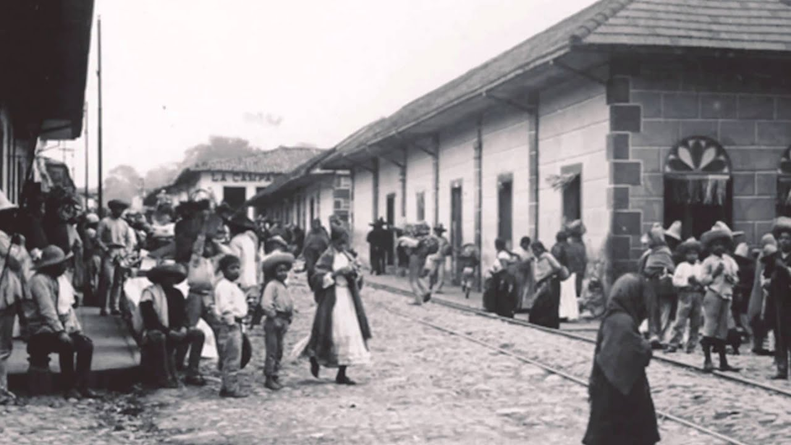
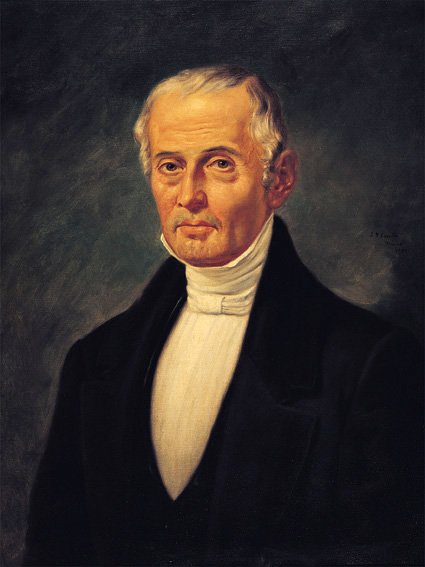
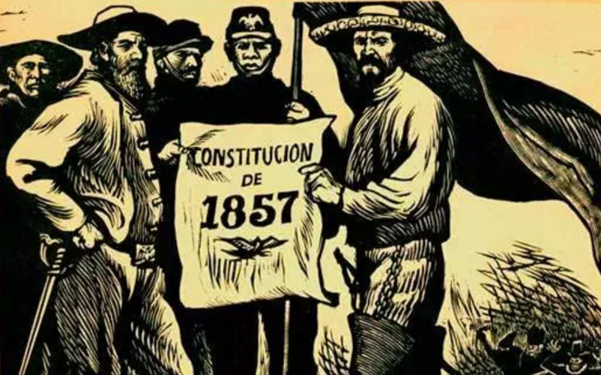
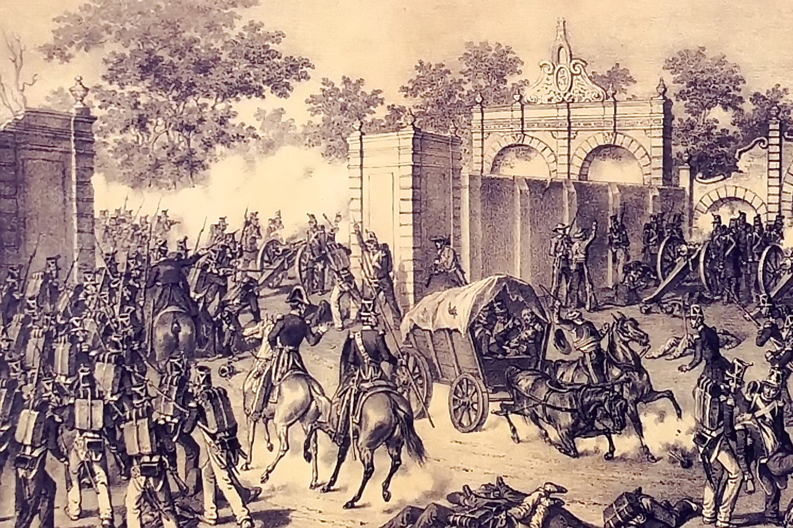
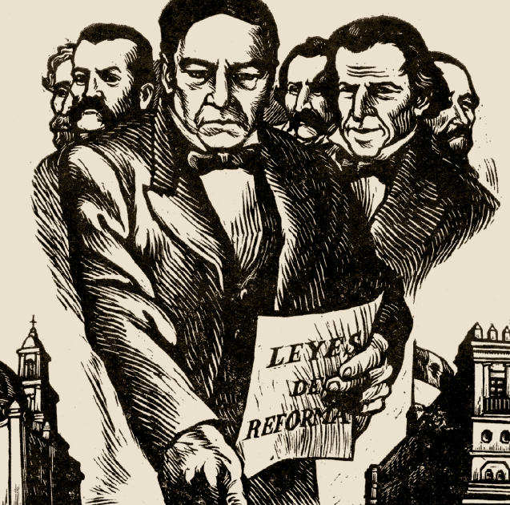
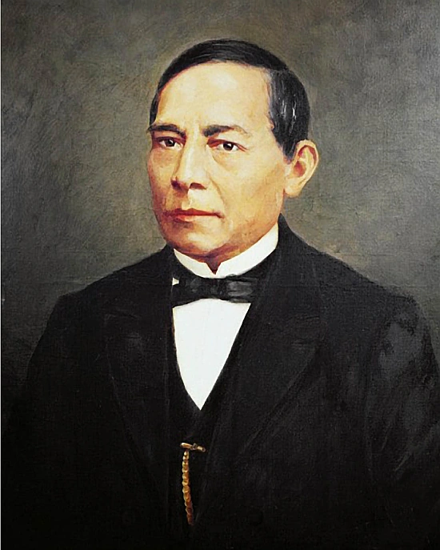
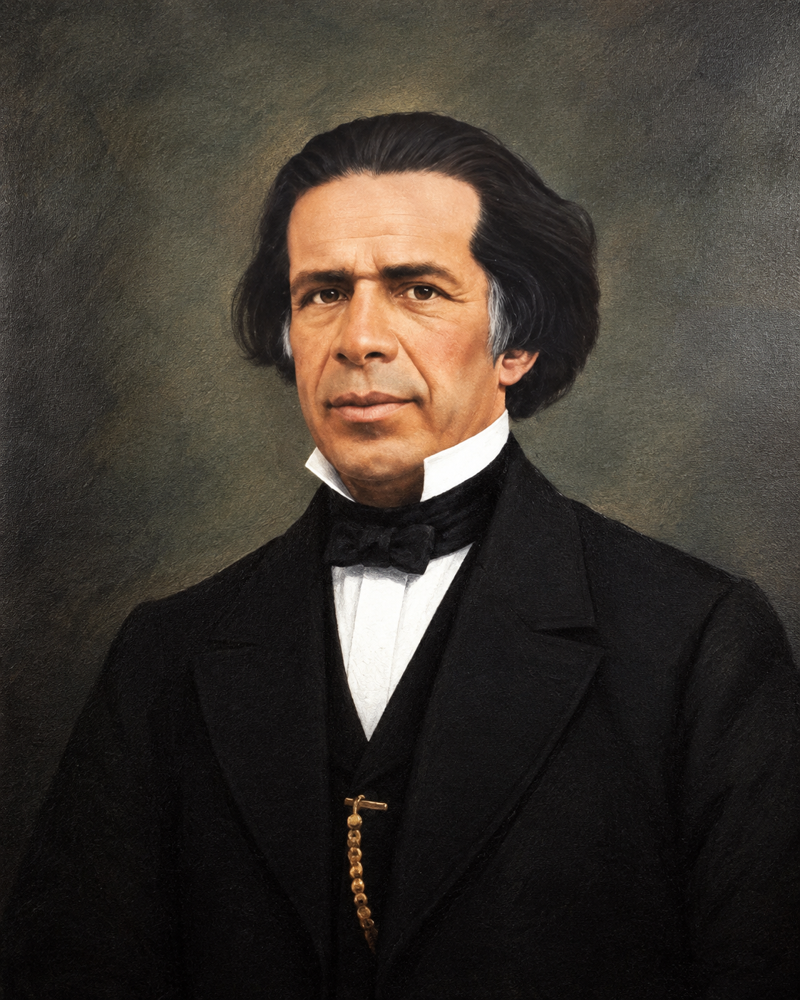

Estudiante: Mena Lara Leonel
Grupo: 5AVPG
Tema seleccionado: Liberalismo mexicano
Antes del triunfo de la Reforma liberal a mediados del siglo XIX, México vivió un periodo de profunda crisis, inestabilidad extrema y rezago estructural tras su independencia en 1821. El país se encontraba atrapado en las dinámicas del "Antiguo Régimen" colonial.
Aunque México ya era independiente, seguían vigentes las estructuras de la Colonia: la Iglesia católica y el ejército conservaban fueros (tribunales y privilegios propios), la Iglesia era la mayor propietaria de tierras y bienes, y gran parte de la población vivía en la pobreza. A esto se sumaban los constantes cambios de gobierno, la falta de recursos del Estado, la pérdida de Texas (1836) y la derrota en la guerra contra Estados Unidos (1846-1848). Los liberales querían construir un Estado moderno; los conservadores querían conservar el orden heredado de la Colonia.

Siendo vicepresidente en funciones, Valentín Gómez Farías, con el apoyo ideológico de José María Luis Mora, impulsó las primeras reformas liberales: redujo privilegios del clero y del ejército y buscó controlar la educación. Las reformas provocaron una fuerte reacción y Santa Anna las canceló en 1834.

En marzo de 1854 Florencio Villarreal proclamó el Plan de Ayutla, reformado después en Acapulco por Ignacio Comonfort. Con el apoyo de Juan Álvarez, el movimiento exigió el fin de la dictadura de Santa Anna, quien huyó del país en agosto de 1855. Juan Álvarez asumió la presidencia.
El gobierno liberal emitió leyes que atacaban los privilegios heredados de la Colonia:
El Congreso Constituyente promulgó la Constitución del 5 de febrero de 1857, que estableció una república representativa, democrática y federal, reconoció derechos individuales (libertad de expresión, de asociación, de enseñanza, igualdad ante la ley) y abolió la esclavitud y los fueros. No declaró la libertad de cultos, pero tampoco mantuvo la religión católica como religión oficial. La Iglesia y los conservadores la rechazaron.

Con el Plan de Tacubaya (diciembre de 1857), el presidente Ignacio Comonfort se unió a los conservadores y desconoció la Constitución. Benito Juárez, como presidente de la Suprema Corte, asumió la presidencia en 1858 y encabezó un gobierno liberal itinerante que se estableció en Veracruz. Los conservadores formaron su propio gobierno en la Ciudad de México. La guerra civil terminó con el triunfo liberal en la batalla de Calpulalpan (diciembre de 1860).

Desde Veracruz, Juárez expidió las Leyes de Reforma, que consolidaron el proyecto liberal:

Tras suspender el pago de la deuda externa, Juárez enfrentó la intervención francesa y el Segundo Imperio de Maximiliano. Los liberales resistieron y, en 1867, con la caída del Imperio, se restauró la República. En 1873 las Leyes de Reforma se incorporaron a la Constitución durante el gobierno de Sebastián Lerdo de Tejada.


¿Por qué considero importante conocer este proceso histórico para comprender la historia de México?
Considero importante conocer el liberalismo mexicano porque explica cómo México dejó atrás las estructuras heredadas de la Colonia para convertirse en un país con leyes iguales para todos. Gracias a este proceso se establecieron derechos como la libertad de expresión, la igualdad ante la ley y la separación entre la Iglesia y el Estado, que hoy forman parte de nuestra vida diaria.
También permite entender que los cambios no fueron sencillos: provocaron una guerra civil y algunas medidas, como la desamortización, perjudicaron a las comunidades indígenas. Analizar estos aciertos y errores nos ayuda a comprender nuestra identidad como nación y a valorar la importancia de defender nuestros derechos y nuestras instituciones.